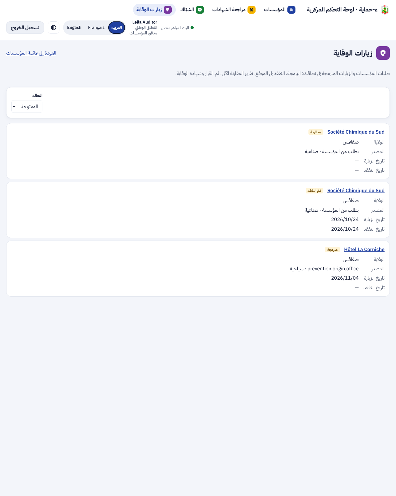
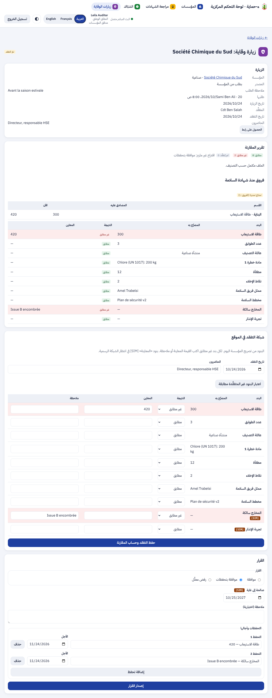
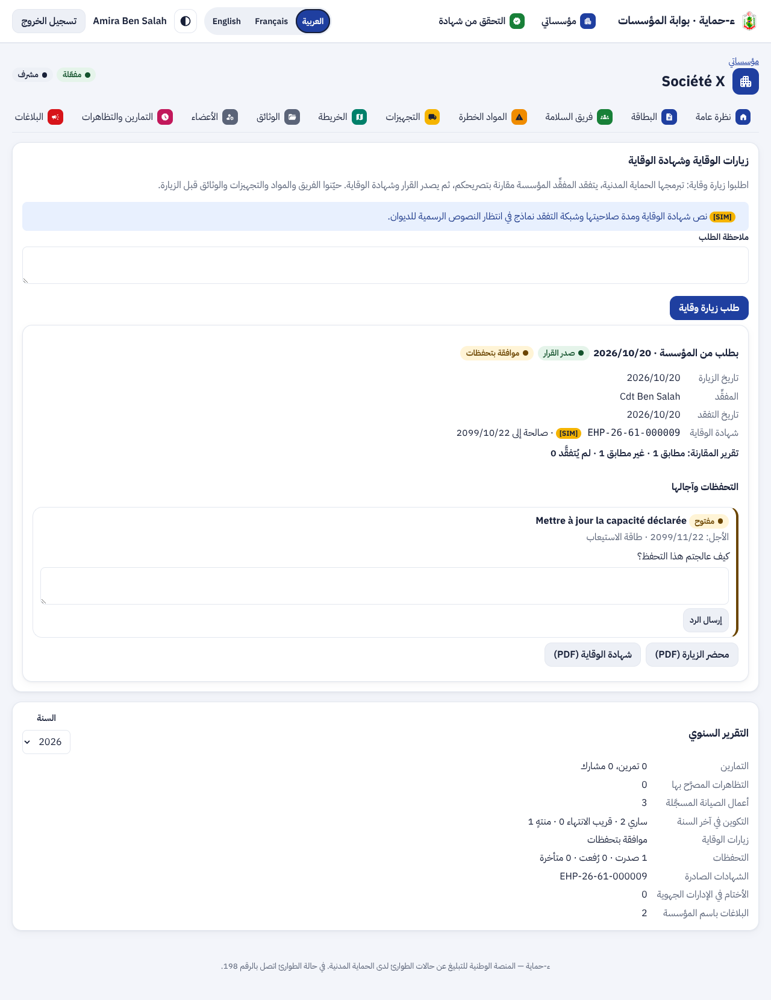
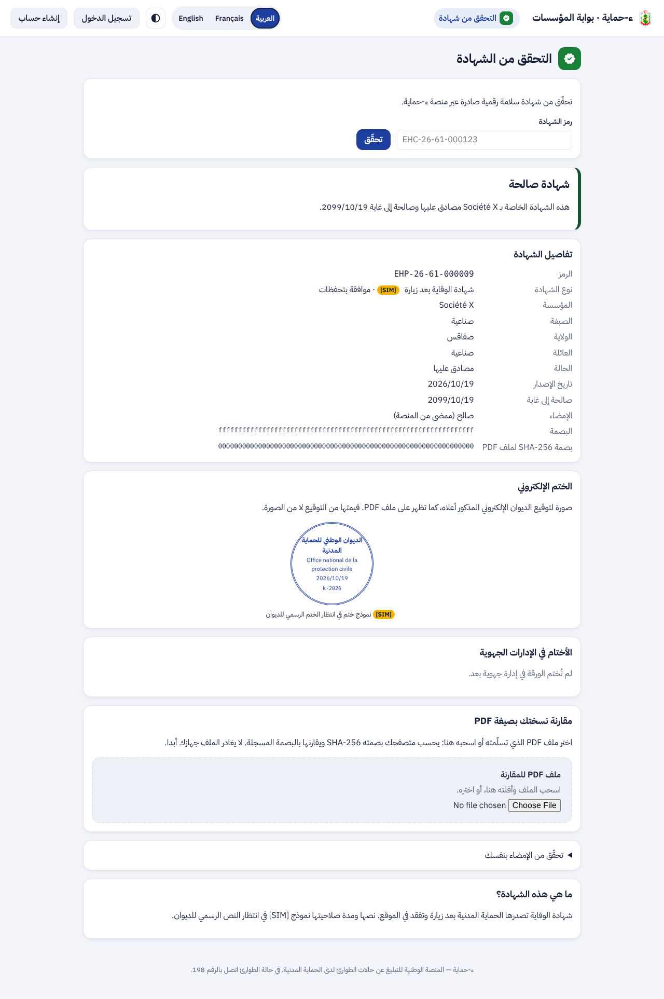
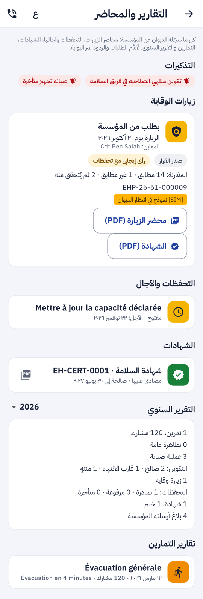
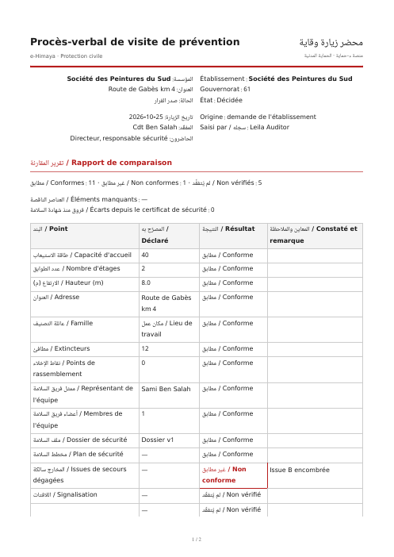
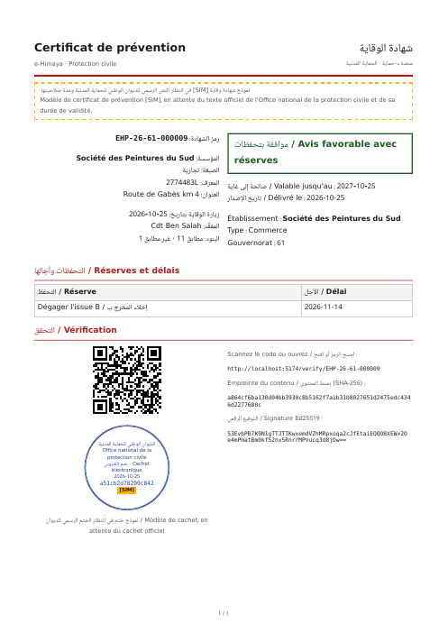

تقرير المرحلة P3b: شهادة الوقاية وقسم التقارير (الجزء الثاني من «الشهادات والنفاذ»). طلب زيارة الوقاية أو برمجتها، التفقد في الموقع، تقرير المقارنة الآلي، القرار بالتحفظات وآجالها، شهادة الوقاية، التقرير السنوي، وقسم «التقارير والمحاضر» في التطبيق
EHP-، فتعمل لها صفحة التحقق والشبّاك والأختام والإلغاء كما هي، وتبقى خارج قوائم شهادة السلامة.لوحة القيادة: طابور زيارات الوقاية، ثم صفحة الزيارة بتقرير المقارنة وشبكة التفقد والقرار بالتحفظات المقترحة. البيانات في اللقطات وهمية [SIM].


البوابة: تبويب الوقاية بالزيارة المقرَّرة والتحفظ والرد والتقرير السنوي، وصفحة التحقق من شهادة وقاية «بتحفظات».


التطبيق، ومحضر الزيارة وشهادة الوقاية بصيغة PDF:



| الجزء | ما أُنجز | التقدم |
|---|---|---|
| الخادم | الترحيل 0047، 16 عملية جديدة، الشبكة وتقرير المقارنة، القرار والتحفظات، شهادة الوقاية ومحضر الزيارة PDF، التقرير السنوي، خمسة تنبيهات، البريد | 100% |
| لوحة القيادة | صفحة «زيارات الوقاية» (الطابور والتصفية)، صفحة الزيارة (البرمجة، الشبكة، المقارنة، القرار، الإلغاء، رفع التحفظات)، الزيارات في صفحة المؤسسة، الشبّاك يقرأ EHP- | 100% |
| البوابة | تبويب «الوقاية» (الطلب والسحب، الزيارات، المقارنة، الرد على التحفظات، المحضر والشهادة)، التقرير السنوي، نوع الشهادة في صفحة التحقق، التنبيهات الجديدة في النظرة العامة | 100% |
| التطبيق | 0.14.0: قسم «التقارير والمحاضر» F-APP-132 ونصوص التنبيهات الخمسة | 100% |
تقدم P3b: 100%. تقدم P3 كله: حوالي 80% (يبقى P3c النفاذ في التطبيق).
| العملية | من يستعملها |
|---|---|
GET · POST /orgs/{id}/prevention/visits | البوابة والتطبيق (الطلب للمسؤول) |
POST /orgs/{id}/prevention/visits/{vid}/cancel · GET …/report | البوابة والتطبيق |
POST /orgs/{id}/prevention/reservations/{rid}/response | البوابة (المحرر والمسؤول) |
GET /orgs/{id}/annual-report?year= | البوابة والتطبيق |
GET /staff/prevention/visits · GET /staff/prevention/visits/{vid} · GET …/report | اللوحة: من يقرأ المؤسسات في نطاقه |
GET · POST /staff/orgs/{id}/prevention/visits | اللوحة |
POST /staff/prevention/visits/{vid}/schedule · inspection · decision · cancel | اللوحة: مراقب المؤسسات |
POST /staff/prevention/reservations/{rid}/lift | اللوحة: مراقب المؤسسات |
| الطبقة | جديدة في P3b | المجموع الآن |
|---|---|---|
| الخادم (pytest) | 6: الشبكة وتقرير المقارنة، المسار الكامل بالتحفظات مع التحقق العمومي والشبّاك والرد والرفع والتأخر، الرفض المعلَّل، الموافقة وإحلال الشهادة السابقة، الإلغاء والنطاق والأدوار، التقرير السنوي | 850 |
| لوحة القيادة (vitest) | 9: حساب التواريخ، قراءة EHP-، الطابور، البرمجة، الشبكة وشرط الملاحظة، المقارنة والقرار بالتحفظات المقترحة، الرفض بسبب، رفع التحفظ، القراءة فقط | 460 |
| البوابة (vitest) | 4: طلب الزيارة، منع العضو، القرار والمقارنة والشهادة والرد على التحفظ، التقرير السنوي | 104 |
| التطبيق (flutter test) | 1: قسم التقارير كاملاً (التذكيرات، الزيارة والمقارنة و[SIM]، فتح المحضر والشهادة، التحفظات، الشهادات، التقرير السنوي وتغيير السنة) | 427 |
الترحيل 0047 جُرّب صعوداً ونزولاً ثم صعوداً. فحص النفاذ axe (WCAG 2.2 AA) أُضيف لصفحة زيارات الوقاية في اللوحة ولتبويب الوقاية في البوابة بمحتواه، بلا مخالفة، بالعربية والفرنسية. التحليل الثابت نظيف: ruff و mypy، eslint و tsc، flutter analyze. ملف OpenAPI ومخطط قاعدة البيانات وجدول التتبع محدّثة.
لا حزمة جديدة. المحضر والشهادة بـ WeasyPrint الموجود، والتوقيع بمفتاح Ed25519 نفسه. القائمة الكاملة في versions.md.
0.14.0 (البناء 13) · Flutter 3.47.7 · 1
flutter build apkAlembic · 0047 · 1
cd services/api && uv run alembic upgrade headspec/: F-POR-08 و F-APP-132 منجزان، F-DSH-34 مكتمل، 394 عملية و47 ترحيلاً، خارطة الطريق.diagrams/: حالات استعمال الزيارة والتحفظات والتقارير، صنفا الزيارة والتحفظ ونوع الشهادة، مخطط تسلسل جديد لزيارة الوقاية، ومخطط حالات جديد للزيارة والتحفظ.presentation/.P3c: مراجعة النفاذ في التطبيق (قارئ الشاشة، تكبير الخط 200%، أهداف اللمس، لا معنى باللون وحده). ينتظر من الديوان: نص شهادة الوقاية ومدة صلاحيتها، وشبكة التفقد الرسمية، والختم الرسمي.